GUÍA VISUAL · MAC Y WINDOWS
Crea y prueba agentes
hablando con IBM Bob
Recorrido automatizado para watsonx Orchestrate
EN UNA FRASE
Abre el paquete, completa la conexión y cuéntale a Bob qué agente quieres. Bob preparará, importará y probará el agente contigo.
Versión visual 10 · 25 de julio de 2026
DOS AGENTES DE IA · DOS PAPELES DISTINTOS
Usamos el agente de IA de Bob para construir otro agente de IA en Orchestrate
En este taller intervienen dos agentes de IA: el agente integrado en Bob actúa como constructor y crea el agente de negocio que después funciona y se prueba en watsonx Orchestrate.
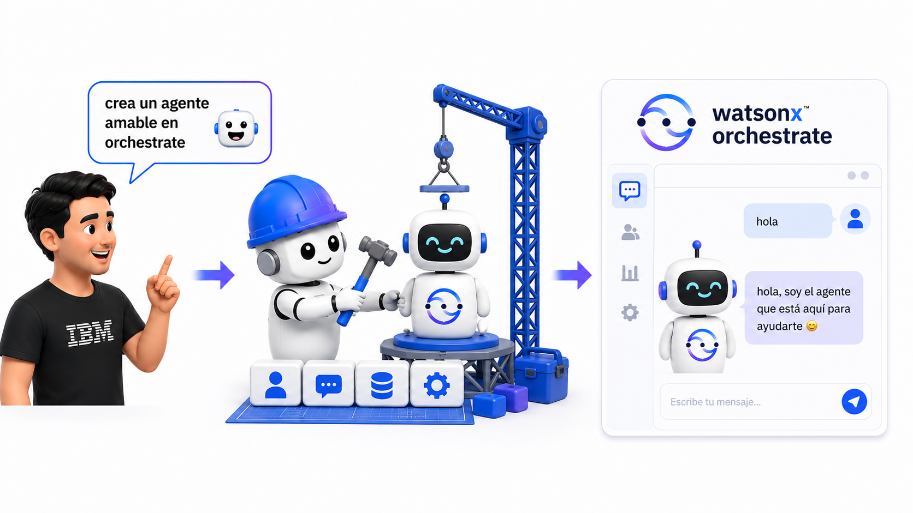
Agente de IA de Bob. Comprende la petición, trabaja sobre el proyecto y realiza el proceso técnico bajo aprobación.
Agente de IA de Orchestrate. Es el resultado final: atiende a sus usuarios con el comportamiento y las capacidades definidos.
0. Instala o actualiza IBM Bob
El recorrido necesita una versión reciente de IBM Bob. Las versiones antiguas (1.x) provocan fallos extraños durante el proceso.
Paso 1 · Descarga Bob
Entra en bob.ibm.com y pulsa Descargar (Mac y Windows).
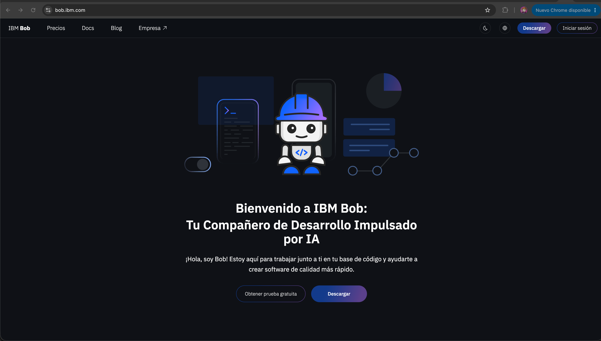
Paso 2 · Instala e inicia sesión
Abre el instalador y entra con tu cuenta de IBM cuando Bob lo pida.
¿YA TENÍAS BOB INSTALADO?
Si tu versión es antigua (1.x), desinstálala por completo e instala la actual desde bob.ibm.com. Es también el arreglo directo si Bob se comporta de forma extraña.
1. Prepara y abre el paquete
Necesitas IBM Bob con la sesión iniciada, Internet, la VPN si tu empresa la requiere y la URL y API key de watsonx Orchestrate.
Paso 1 · Descomprime el ZIP
En macOS, haz doble clic. En Windows, botón derecho → Extraer todo → Extraer.
Paso 2 · Abre la carpeta en Bob
Pulsa File → Open Folder y elige taller-bob-orchestrate-automatizado.
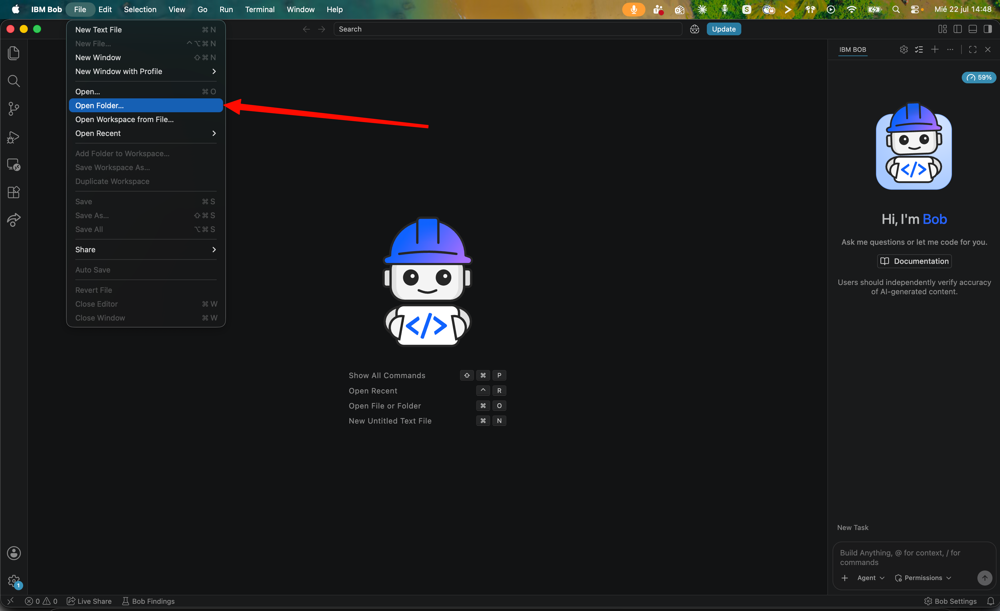
LA CARPETA CORRECTA
Abre la carpeta extraída, no el archivo ZIP ni una carpeta situada por encima de ella.
LA PRIMERA VEZ QUE ABRES BOB
Si Bob pregunta por importar ajustes de otro editor, pulsa Skip for now. Si aparece la pestaña Get started, ciérrala. Y si arriba ves un botón azul Update, tu Bob no es la última versión: vuelve al paso 0.
2. Completa la conexión
En el panel izquierdo abre .env. Completa únicamente WXO_URL= y WXO_API_KEY=, y guarda el archivo: ⌘S en Mac, Ctrl+S en Windows (o File → Save). El punto de la pestaña de .env desaparece al guardar.
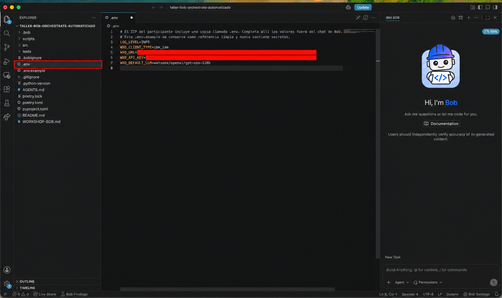
PROTEGE LA CLAVE
Pega la API key solo en .env. No la escribas en el chat, no adjuntes el archivo y no la incluyas en capturas.
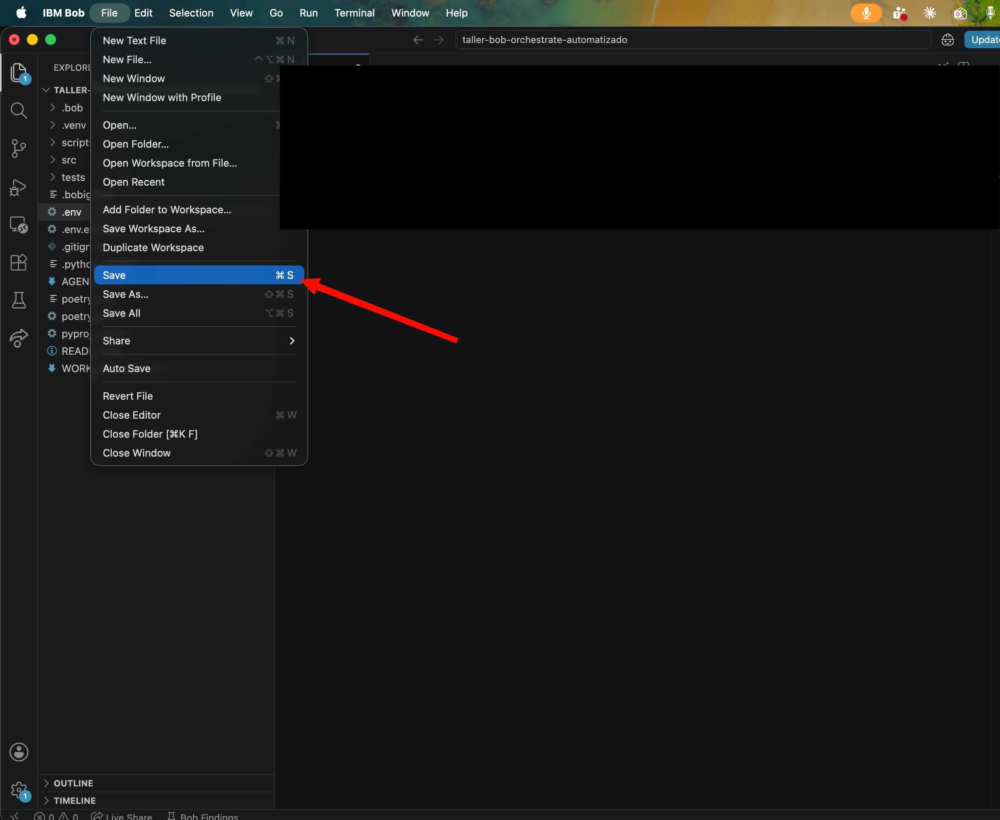
3. Dile a Bob qué agente quieres
Paso 1 · Selecciona el modo
En el selector junto al chat elige 🤖 Crear agente Orchestrate.
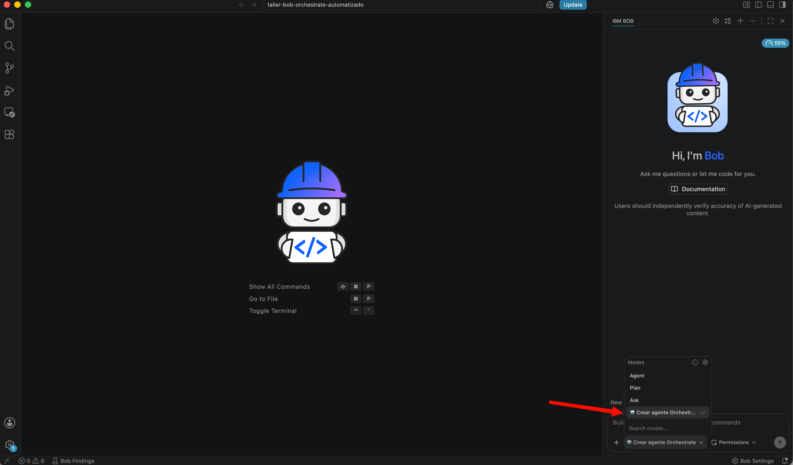
Paso 2 · Escribe o dicta tu petición
Descríbelo con tus propias palabras. Por ejemplo:
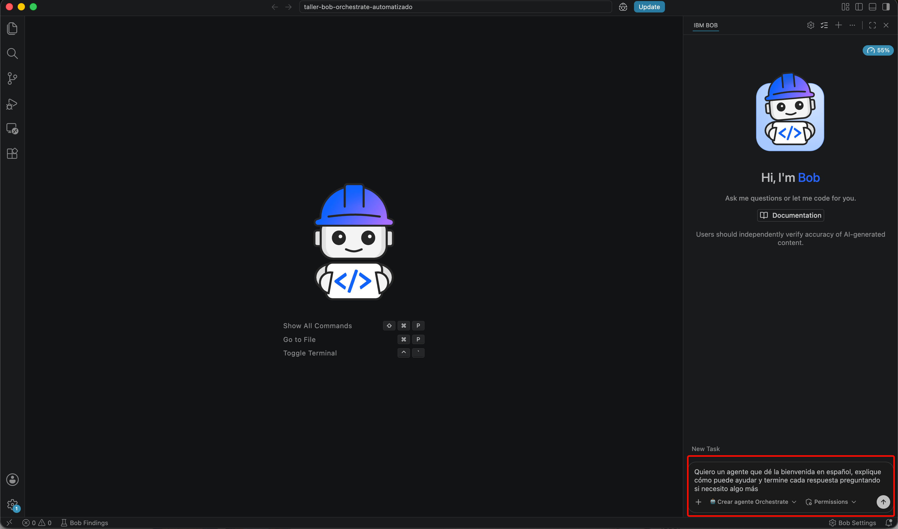
Paso 3 · Aprueba las acciones
Cuando Bob pida permiso, pulsa Approve for task para aprobar ese tipo de acción durante toda la tarea (Approve once la aprueba solo una vez).
Paso 4 · Acepta el entorno de Python
Si aparece el aviso “We noticed a new environment has been created”, pulsa Yes.
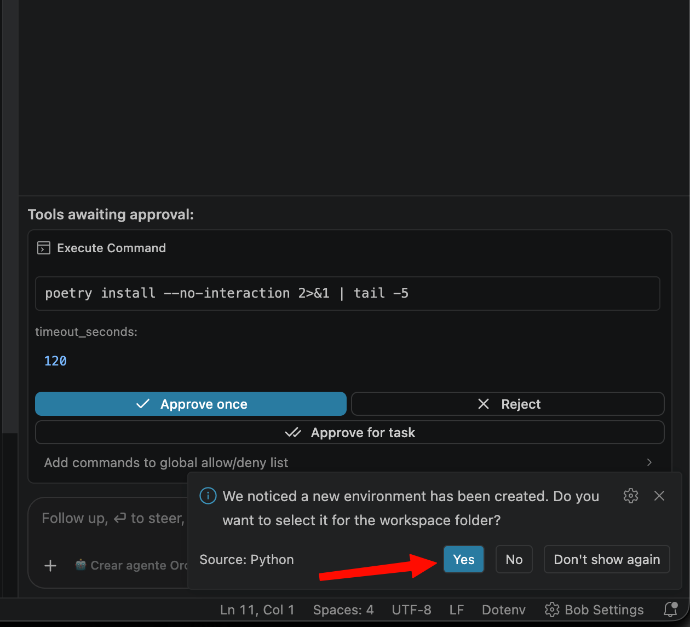
Paso 5 · La advertencia de seguridad
Si tu equipo necesita instalar Python y Poetry (lo normal la primera vez), esa aprobación llega con una advertencia de seguridad: marca la casilla I understand the risk y pulsa Approve. Es el único paso que puede traer esa casilla y es el que Bob te acaba de anunciar. Si no aparece, tu equipo ya tenía Python: sigue adelante.
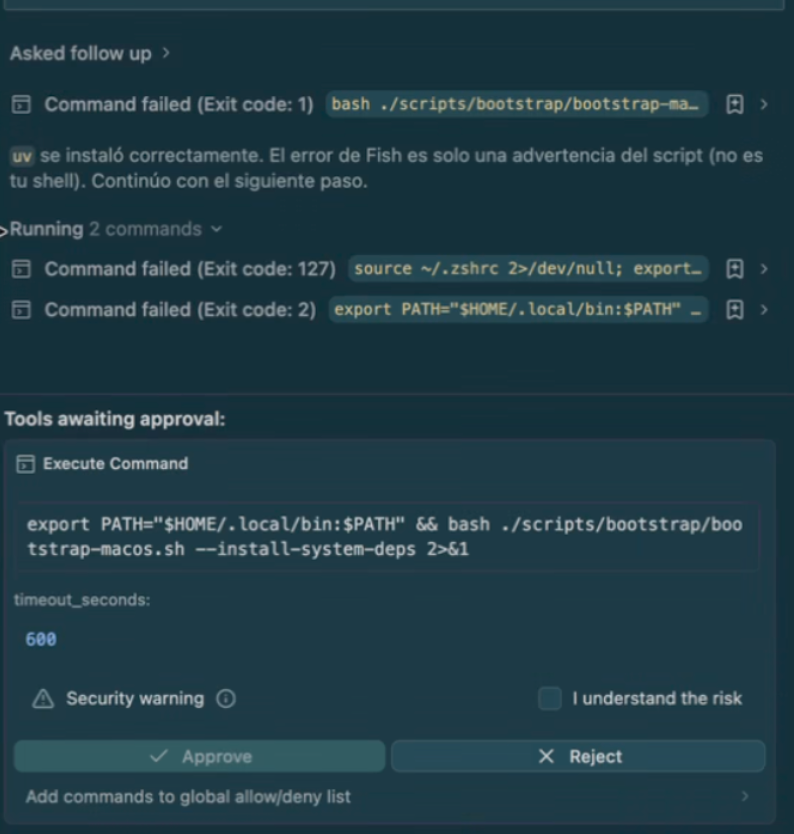
LOS PERMISOS SON TU CONTROL
Bob pide permiso la primera vez que hace cada tipo de acción (ejecutar los pasos de preparación, editar los archivos del agente). Es su diseño de seguridad: nada ocurre sin tu OK. En este taller nunca te pedirá contraseñas ni comandos con sudo; si algo así apareciera, avisa al facilitador.
4. Revisa antes de importar
Bob te enseñará un resumen: qué hará el agente, qué no hará, cómo se importará y qué pregunta utilizará para probarlo.
Paso 1 · Lee el resumen
Comprueba que describe lo que pediste.
Paso 2 · Confirma
Responde “Sí, adelante”.
Paso 3 · Aprueba la importación
Pulsa Approve once cuando Bob lo solicite.
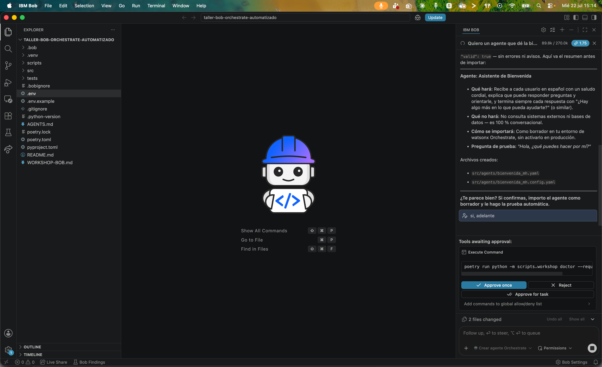
IMPORTACIÓN SEGURA
El agente se crea como borrador. No se activa ni se publica en producción.
5. Comprueba el resultado en Bob
Al terminar, Bob confirma la importación y muestra una respuesta real del agente.
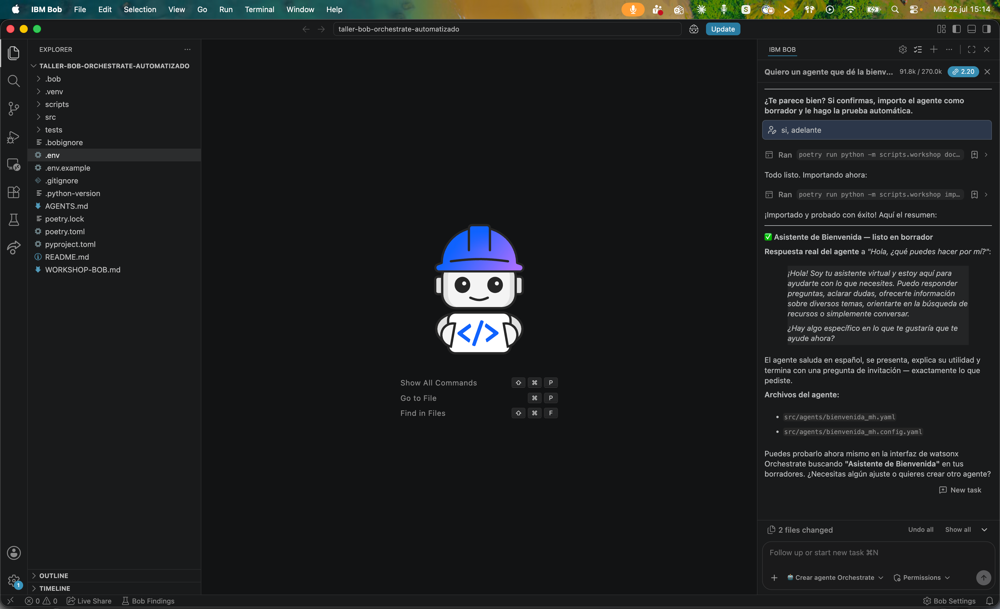
6. Pídele que liste tus agentes
Puedes comprobar desde el propio chat qué agentes hay disponibles. Cada persona verá los de su propia instancia: puede aparecer uno, tres o cualquier otra cantidad.
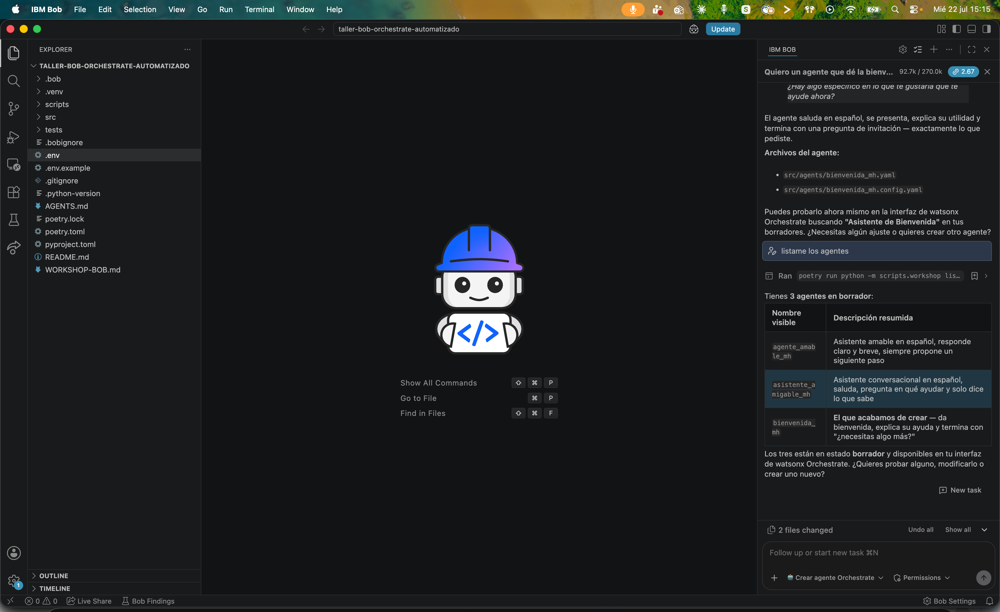
7. Encuentra el agente en Orchestrate
Paso 1 · Abre watsonx Orchestrate
Entra en tu instancia desde el navegador.
Paso 2 · Ve a Manage agents
Abre el menú, entra en Chat y pulsa Manage agents.
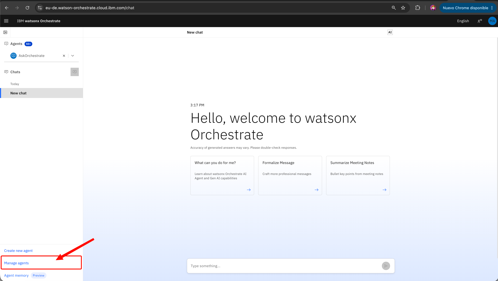
8. Abre el agente
Localiza la tarjeta del agente que Bob acaba de crear y ábrela.
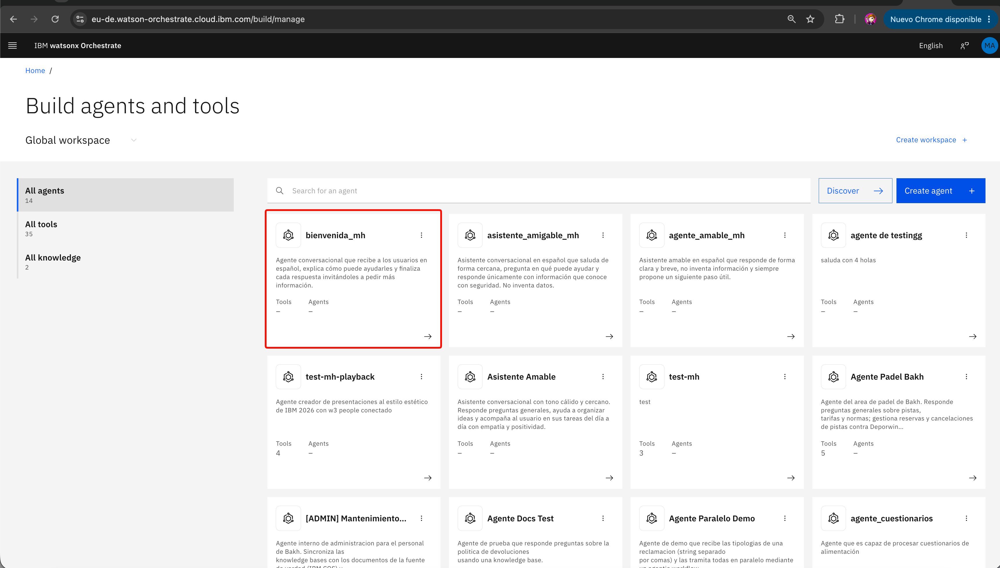
9. Pruébalo en Orchestrate
Escribe una pregunta en el cuadro Preview de la derecha. Si ves una respuesta coherente, la prueba ha terminado.
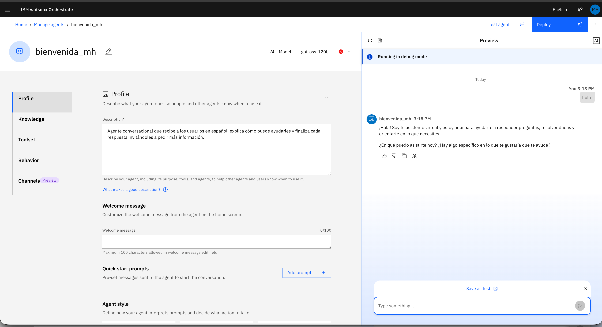
Si algo no funciona
| Elemento | Qué debe ocurrir |
|---|---|
| No aparece el modo | Abre la carpeta que contiene .bob, scripts y src; reinicia Bob. |
| No conecta | Revisa Internet, VPN, URL y API key. No compartas .env. |
| No ves el agente | Dile a Bob: “Lista mis agentes” y busca ese nombre en Manage agents. |
| Bob pide cambiar de modo o editar código | No cambies de modo, no edites scripts y no concedas permiso Edit. Cierra ese intento y abre de nuevo la carpeta del paquete. |
| Bob falla o hace cosas raras | Desinstala IBM Bob por completo e instala la última versión desde bob.ibm.com. |
AL PEDIR AYUDA
Comparte el paso y el mensaje de error, pero oculta siempre la API key, la URL privada y el contenido de .env.